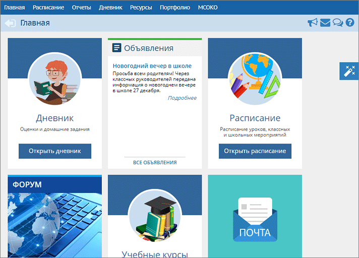

Родители и ученики могут начать работу с Главной страницы, на которой расположены "плитки", помогающие одним кликом перейти к соответствующему разделу системы:

Эти "плитки" на Главной странице вы можете легко расположить в удобном для себя порядке. Достаточно выделить нужную плитку, нажав левую клавишу мыши и, не отпуская, перетянуть плитку в выбранное место на странице.
Кроме того, можно убрать плитки для перехода к тем разделам, которые вам не интересны. В правой части экрана расположена кнопка в виде «волшебной палочки». После нажатия на неё откроется дополнительное меню, где можно добавить или удалить "плитки" для перехода разделам, таким образом настроив отображение только нужных вам плиток: